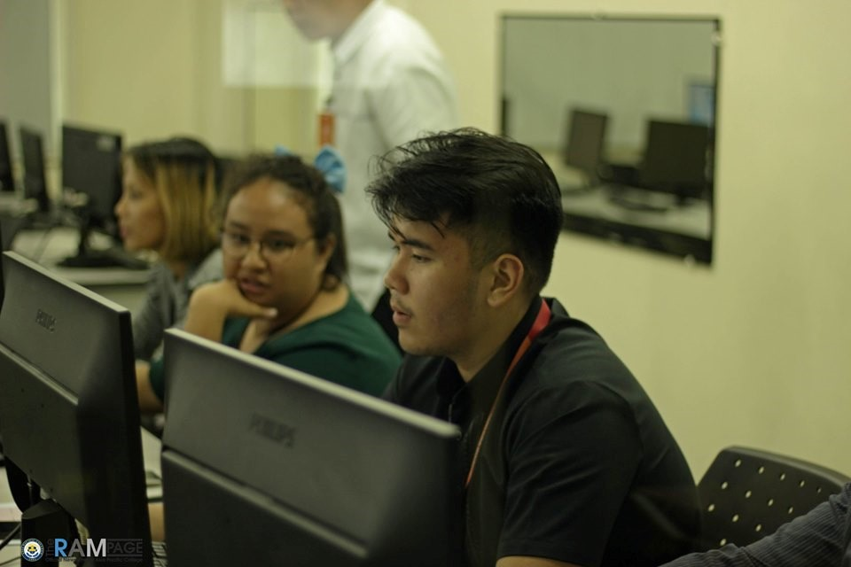
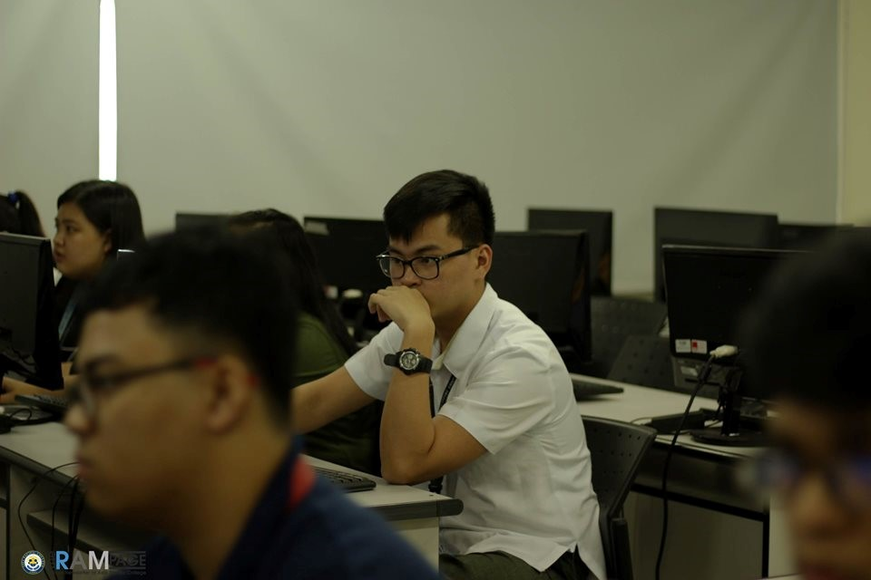
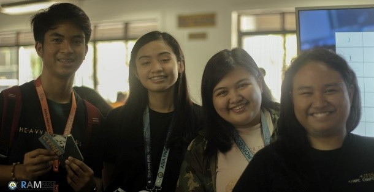
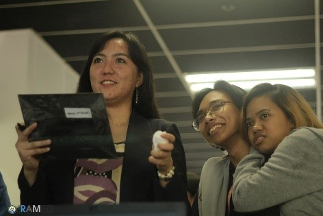
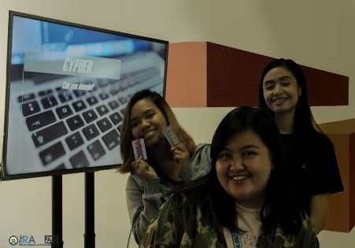
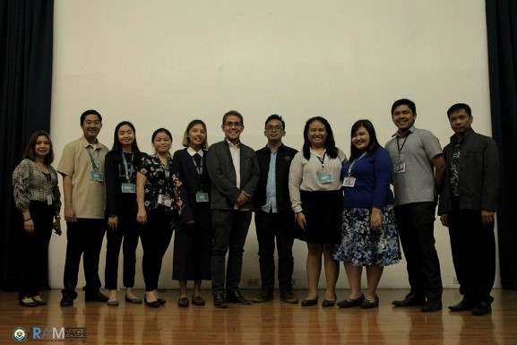
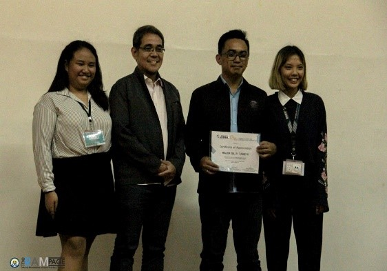
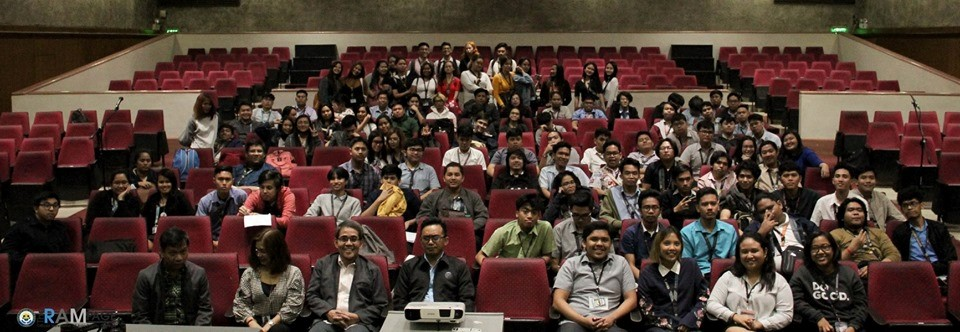

01_R5_ABENALES
SoCIT Fest is one of the most exciting events for me since I experienced helping to organize it last year with my seniors on my organization, JISSA – APC Chapter. I just didn’t expect preparing the events without our seniors to be that stressful. I missed when our seniors will instruct us on what we should do. Though, this is not our first major event, but it is different with our previous event which is our mother organization’s General Assembly.
Since I’m part of an organization, I am considered as organizer. JISSA – APC Chapter events for SoCIT Fest are SNATCH, CYPHER and UNMASKED.
SNATCH is a capture the flag kind of game wherein we let the students to group and plays the game competitively. The group with highest points will win merchandise from our organization. SNATCH happened during the first day of SoCIT Fest.


CYPHER is a two-day mini game booth at Cafeteria where you will need to solve different type of puzzles. If you answered the puzzle before the timer stops, you will have a grand prize which is a correction tape, stickers and notebook; if you answered the puzzle after the timer stops, you will win a prize which is a notebook and stickers; and if you give up from answering it, you can get stickers as a “thank-you-for-trying-to-solve-the-puzzle" gift which is stickers. CYPHER runs from the second day and the last day of SoCIT Fest.



UNMASKED is a seminar raising awareness for the security of Internet of Things such as CCTVs and Drones. UNMASKED happened during the second day of the SoCIT Fest.



We also do a collaborative event with other SoCIT organizations such as Opening Ceremony and SoCIT Night.
I also participated as a tour guide during NU Laguna’s visit on APC at second day of SoCIT Fest.
As an organizer, I find it hard to adjust with people who doesn’t even consider how some things are so important such as time. There’s a lot of instances that the events started late because some people didn’t give importance to the time of the event, especially the guest speakers.
My expectations for the next SoCIT Fest are:
• MEETINGS IS A MUST
• Don’t let someone decide on events that is collaborative.
• HELP EACH OTHER
• Consider some things especially if working with other organizations
• More fun activities